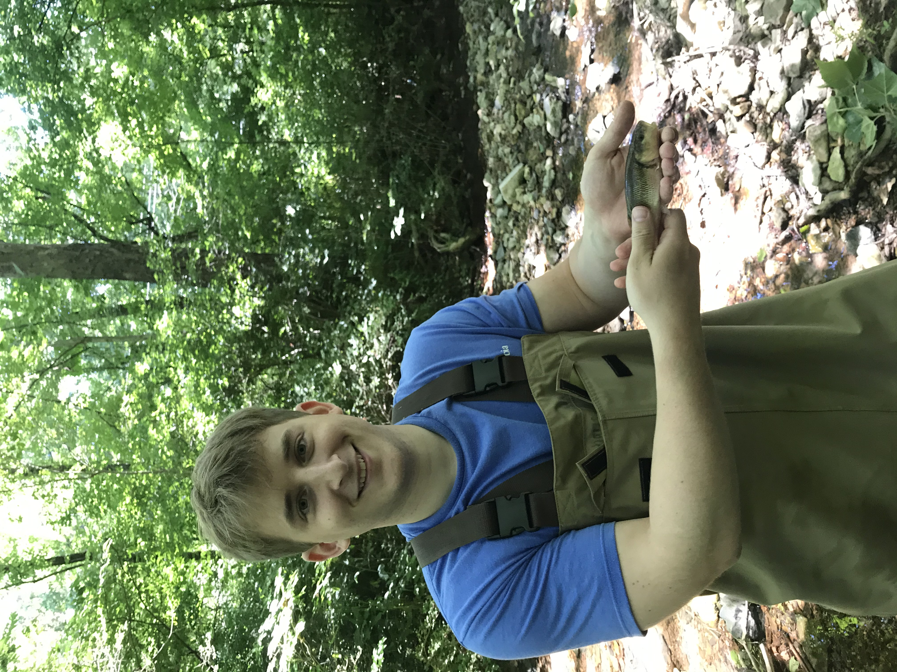
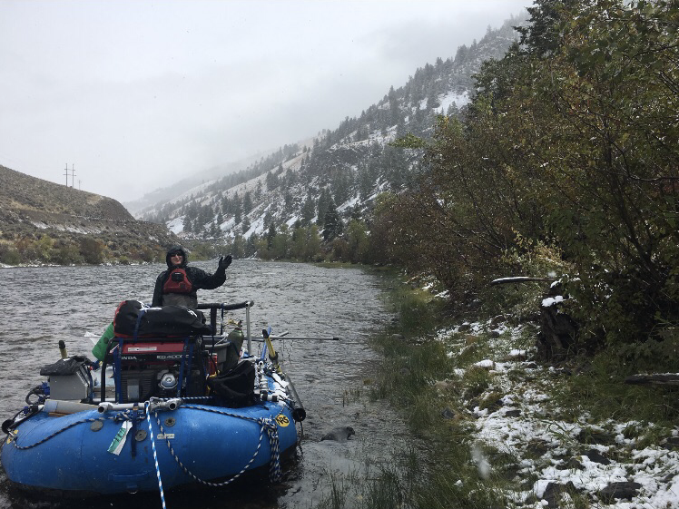
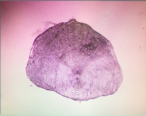

Curriculum Vitae
Education
Master's in Biology (2022, in progress)
Austin Peay State University, Clarksville, TN
BA in Marine Science, Chemistry Minor (2017)
University of San Diego, San Diego, CA
Research Interests
Behavioral ecology of fishes, management of exploited fishes,
fish movement and recruitment, and anthropogenic influences
on
biological processes.
Research Experience
Master's Thesis Research (2020 - ongoing)
Department of Biology, Austin Peay State University- Investigated the existence and properties of personality in the Creek Chub, Semotilus atromaculatus, and its relationship to an individual's colonization decisions.
Click here to view an article about a departmental trip to the annual meeting of the Southeastern Fishes Council, where I had the opportunity to present on my thesis research.
Summer Undergraduate Research Experience (2016)
Department of Environmental and Ocean Sciences,University of San Diego
- Designed, implemented, and analyzed a research project to assess the potential effects of increased turbidity on the feeding success and predator evasion behavior of two estuarine fish species.
- Presented findings at both a campus-wide undergraduate research symposium and a departmental forum.
Honors and Awards
Best Undergraduate Research (2017)
Department of Environmental and Ocean Sciences,
University of San Diego
Dean's List (Fall 2016 - Spring 2017)
University of San Diego
Technical Competencies
Mathematical Modeling in Ecology- Completed a single-semester course offered by the University of San Diego in which I improved my ability to describe ecological processes in mathematical terms and to formulate mathematical models relevant to ecology.
- Employed this programming language in my studies in order to successfully model various hypothetical and real-world ecological processes.
Professional Experience
Graduate Teaching Assistant - Department of Biology, Austin Peay State
University
(August 2020 - present)
- Assisted primary instructors with course instruction and activities.
- Reviewed and graded laboratory reports and assignments.
- Consulted with students about progress in the course and learned concepts.
Scale Age Technician - Ocean Salmon Project, California Department of
Fish and Wildlife
(November 2018 - April 2020)
- In a position funded by the Pacific States Marine Fisheries Commission, contributed to the management of California’s ocean salmon fisheries through the processing and analyzing of scales from Central Valley Chinook salmon (Oncorhynchus tshawytscha) for the purpose of age estimation.
Fisheries Technician and Biological Aide,
Idaho Department of Fish and Game
(June – October, 2017 and 2018)
- Supported the work of the Resident Fisheries Biologist to manage the resident sport fishes of the Salmon Region
- Utilized a wide variety of methods in order to survey high mountain and lowland lakes, as well as the Salmon River and its tributaries.
Extra-Curricular Activities
Out-of-State Student Council (2014 - 2016)
University of San Diego, San Diego, CA- Collaborated with students and faculty to enhance educational and social environments and welcome out-of-state students.
- Planned welcoming events and advised future students on various topics regarding campus life and culture.
Black Student Union (2013 - 2014)
University of San Diego, San Diego, CA- Collaborated with students and faculty to ensure the representation of students of historically underrepresented backgrounds at every level of student life and government.
Additional Relevant Skills

Field Skills:
Survey Methods: Backpack and raft electrofishing, Fyke and gillnets, beach seines, radio telemetry, snorkel transects, redd and carcass surveys.Tagging Methods: coded wire, radio, passive integrated transponder,
Floy and spaghetti tags.
Backcountry Skills: hiking and navigating using maps and handheld GPS equipment, coordinating necessary sampling and camping gear for extended amounts of time in wilderness areas.
Husbandry Skills:
Capable of rearing and maintaining live specimens in a healthy state in aquaria.